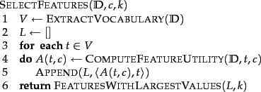
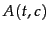
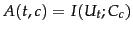
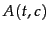
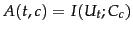
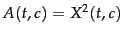
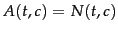
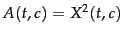
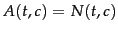

Next:
Mutual information
Up:
Text classification and Naive
Previous:
A variant of the
Contents
Index
Feature selection
Feature selection is the process of selecting a subset of the terms occurring in the training set and using only this subset as features in text classification. Feature selection serves two main purposes. First, it makes training and applying a classifier more efficient by decreasing the size of the effective vocabulary. This is of particular importance for classifiers that, unlike NB, are expensive to train. Second, feature selection often increases classification accuracy by eliminating noise features. A
noise feature is one that, when added to the document representation, increases the classification error on new data. Suppose a rare term, say arachnocentric, has no information about a class, say China, but all instances of arachnocentric happen to occur in China documents in our training set. Then the learning method might produce a classifier that misassigns test documents containing arachnocentric to China. Such an incorrect generalization from an accidental property of the training set is called
overfitting .
Figure: Basic feature selection algorithm for selecting the
 best features.
best features.
|  |
We can view feature selection as a method for replacing a complex classifier (using all features) with a simpler one (using a subset of the features). It may appear counterintuitive at first that a seemingly weaker classifier is advantageous in statistical text classification, but when discussing the bias-variance tradeoff in Section 14.6 (page ![[*]](http://nlp.stanford.edu/IR-book/html/icons/crossref.png) ), we will see that weaker models are often preferable when limited training data are available.
), we will see that weaker models are often preferable when limited training data are available.
The basic feature selection algorithm is shown in Figure 13.6 . For a given class  , we compute a utility measure  for each term of the vocabulary and select the terms that have the highest values of . All other terms are discarded and not used in classification. We will introduce three different utility measures in this section: mutual information,
; the
, we compute a utility measure  for each term of the vocabulary and select the terms that have the highest values of . All other terms are discarded and not used in classification. We will introduce three different utility measures in this section: mutual information,
; the  test,
; and frequency,
.
test,
; and frequency,
.
Of the two NB models, the Bernoulli model is particularly sensitive to noise features. A Bernoulli NB classifier requires some form of feature selection or else its accuracy will be low.
This section mainly addresses feature selection for two-class classification tasks like China versus not-China. Section 13.5.5 briefly discusses optimizations for systems with more than two classes.
Subsections
Next:
Mutual information
Up:
Text classification and Naive
Previous:
A variant of the
Contents
Index
© 2008 Cambridge University Press
This is an automatically generated page. In case of formatting errors you may want to look at the PDF edition of the book.
2009-04-07